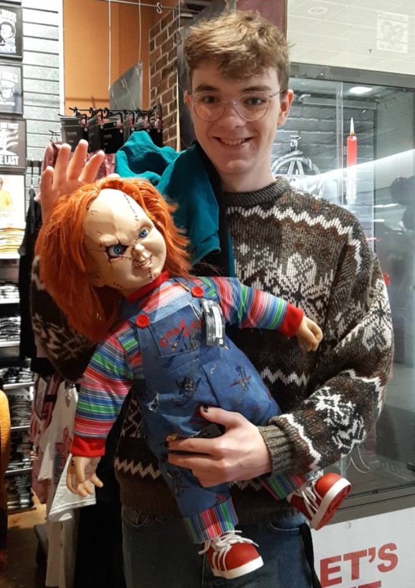

>About Me
My name is Sam Terry. I am a 23 year old college student from the Twin Cities who is currently studying organizational communications with a music minor at the University of Wisconsin-Eau Claire. I am also a resident assistant at Governors Hall currently, but previously I was at Haymarket Landing. Over the summers I stay in Eau Claire and work as a conference assistant on campus. Some of my hobbies include film (especially horror), board games, video games, and music. My favorite movie is The Wind Rises directed by Hayao Miyazaki, and my favorite TV show is Doctor Who, but my favorite thing in the world is the band BROCKHAMPTON. I even have multiple tattoos of the band on my arm! I also really like event planning. My favorite events that I’ve run include an annual haunted house, an escape room, and a backyard waterpark and carnival! I would really like to run or work on a professional haunted house one day. After I graduate, I hope to go to graduate school for student affairs and hopefully work at the local movie theater in the time in-between.
>Education
- Roseville Area High School
- Graduated in 2020
- Universiy of Wisconsin-Eau Claire
- Major: Organizational Communications
- Minor: Music
- Anticipated Graduation: Fall 2024
>Work Experience
- Resident Assistant
- 3 years of experience
- Worked in both freshman and upperclassmen dorms
- Conference Assistant
- 3 years of experience
- Designated as a lead staff member for the 3rd year